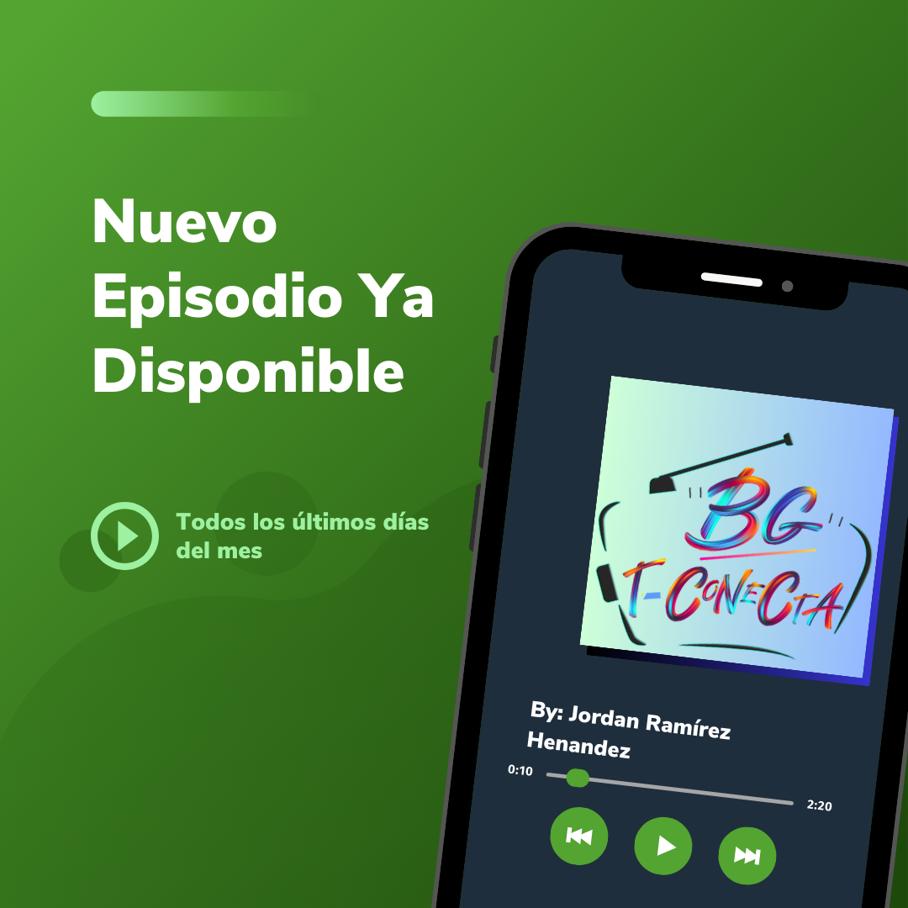

Podcast educativo
BG te conecta con el contenido educativo más atractivo, divertido, interesante y novedoso, ¡Así que sintonízanos!.
Ver proyectoBG te conecta con el contenido educativo más atractivo, divertido, interesante y novedoso, ¡Así que sintonízanos!.
Ver proyectoCreación y difusión de video promocional a la EPO 21 referente al concurso de los 103 municipios.
Ver proyectoTiene como finalidad difundir el trabajo docente y del alumnado de la zona escolar.
Ver proyectoCreación de sitio web a centro de bachillerato tecnológico con la finalidad de realizar una mayor difusión a la información de mayor relevancia.
Ver proyectoCapacitación de la planta docente EPO 21 en la utilización de dispositivos tecnológicos para potencializar la capacidad de inspirar y transformar la vida de los estudiantes.
Capacitación a la planta docente de la Zona BT009 en la utilización de herramientas que conforman la G-suite.
Evento que realizo semestralmente, teniendo como finalidad mostrar que el educando se ha apropiado del conjunto de conocimientos, habilidades y destrezas, que le permiten ser competente ante diferentes situaciones que se presentan en el ámbito educativo, así como en la vida diaria.
Originario del Estado de México.🌮
Soy ingeniero en sistemas computacionales y actualmente me desempeño como docente en nivel medio superior y superior.
Me gusta el trabajo en equipo, el aprendizaje constante y rodearme de gente apasionada por lo que hace.
Profesor horas clase
Bachillerato General EPO 21Ago 2021- Actualidad
Horas clase en el área de informática: Programación, Sistemas de información, Diseño digital y Páginas web.Profesor horas clase
Bachillerato Tecnológico CBT HuémacJun 2019- Actualidad
Horas clase en el área de Matemáticas y Tecnologías de la información y comunicación.Profesor horas clase
Universidad Alfa Lambda UALMay 2022-Actualidad
Horas clase en el área de sistemas de información.Coordinador académico y profesor horas clases
Universidad Tec Mexiquense UTMFebr-2020 (1 año y 6 meses)
Responsable de capacitar y coordinar a la plantilla docente, formar y acompañar a los educandos en todo su proceso académico y de formación.Técnico de software y hardware
Masters SolutionsEn-2018 (1 año)
Diseño e instalación de sistemas de seguridad CCTV, optimización de centros de cómputo.Desarrollador de software
PROA S.AJun-2017 (6 meses)
Participación en la realización de Sistema administrativo de control de pensiones y registro de servicios a embarcacionesIngeniería en sistemas computacionales
Tecnológico de estudios superiores egresado en 2017
Español (nativo)
Inglés B1+
Paquetería OFFICE (OFFICE 365 Education).
G-suite.
Moodle.
SQL.
HTML.
CSS. Frameworks (Bootstrap, Materialize).
PHP
Adaptación para trabajar en equipo
Proactivo
Capacidad de innovación
Resolución de problemas
Trabajo bajo presión
Interés al investigar.
¿Quieres que trabajemos juntos, tienes alguna duda o simplemente quieres decir hola? Estaré feliz de contestar.
iscramirezhh@gmail.com